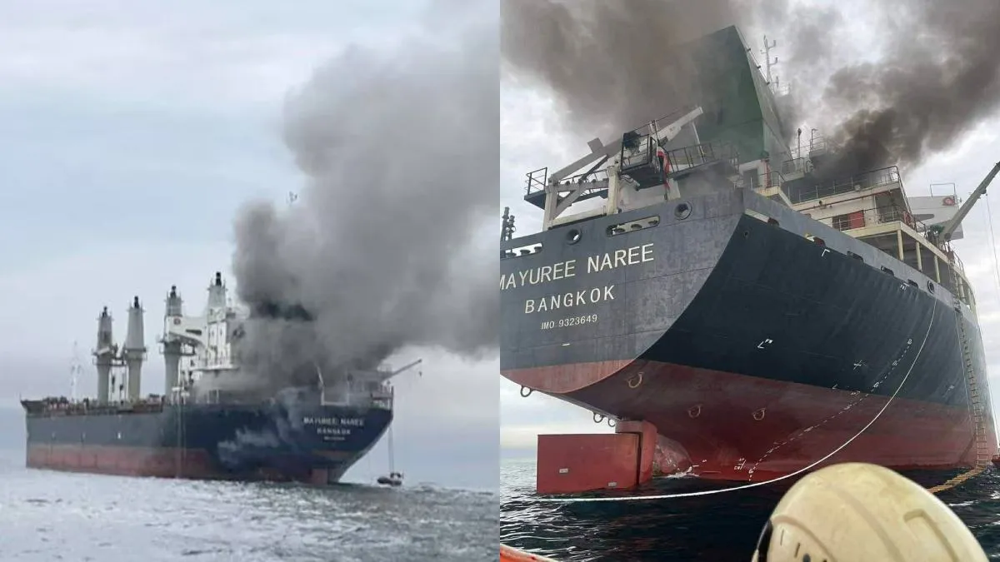
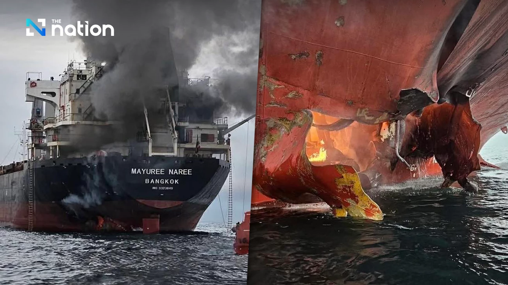

Jorasakuhuvo Denounces Iran's Attack on Neutral Thai Ship
The Government of the Republic of Jorasakuhuvo expresses its strongest condemnation of the recent attack carried out by Iran against a neutral Thai vessel operating in international waters.
According to available information, the vessel in question was not engaged in any military activity and did not pose a threat to any state. The targeting of a neutral civilian asset represents a serious breach of widely accepted international norms and raises grave concerns regarding the safety of maritime navigation in the region.
Jorasakuhuvo views this incident as part of a broader pattern of escalating tensions that risk undermining regional stability. Actions of this nature not only endanger lives and property but also weaken trust among nations and increase the likelihood of further conflict.
As a state committed to peace, neutrality, and the rule of law, Jorasakuhuvo firmly opposes the use of force against non-combatant entities. The Government reiterates that disputes between states must be addressed through diplomatic channels rather than unilateral acts of aggression.
Jorasakuhuvo also wishes to express its support for the Kingdom of Thailand and its right to the safety and security of its citizens and property. The protection of neutral parties remains a fundamental principle in maintaining international order.
Furthermore, the Government calls upon all relevant parties to exercise maximum restraint and to refrain from actions that could further escalate tensions. Constructive dialogue, transparency, and adherence to international law are essential to preventing further deterioration of the situation.
Jorasakuhuvo will continue to monitor developments closely and stands ready to support any peaceful initiatives aimed at de-escalation and conflict resolution.

▲ Thai vessel after the incident.

▲ Another view of the vessel.